1056B90 SYSTEM CABLE LOOM - R.R.
- Path
- Procedures > 10 ENGINE > 1056 PETROL INJECTION SYSTEM > 1056B MULTI-POINT INJECTION SYSTEM (MPI) > 1056B90 SYSTEM CABLE LOOM - R.R.
- Kind
- repair procedure (removal / refitting; the operation number is the code)
- Applies to
- engines: 1.8, 2.2; all production periods
- Interactive page
- https://sloeber94.github.io/elrnDB-fCrm/en/#/194000322
Applies to: engines: 2.2; all production periods
 Removing
Removing
 Refitting
Refitting- Position the vehicle on a lift.
- Make sure that the ignition key is in the OFF position, then disconnect the battery terminal (-).
Description | Connector | |
|---|---|---|
- | Battery |
1. Remove the sound insulation cover fastened to the engine by three pins.
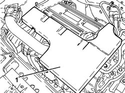
Applies to: engines: 2.2; all production periods
1. Loosen the band and disconnect the engine oil vapour recovery pipe from the cylinder head cover.
2. Loosen the bands and remove the air supply hose from the air flow meter to the throttle casing.
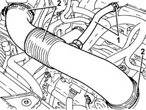
Applies to: engines: 2.2; all production periods
1. Disconnect the electrical connection for the front Lambda sensor to the catalytic converter.
Description | Connector | |
|---|---|---|
1 | Lambda sensor on catalyzer |
2. Disconnect the electrical connection for the rear Lambda sensor to the catalytic converter.
Description | Connector | |
|---|---|---|
2 | Lambda sensor on catalyzer - 2 |
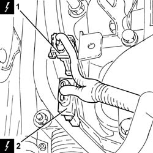
Applies to: engines: 2.2; all production periods
1. Disconnect the electrical connection from the air flow meter.
Description | Connector | |
|---|---|---|
1 | Air flow meter |
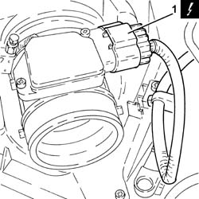
Applies to: engines: 2.2; all production periods
1. Disconnect the electrical connection from the inlet fuel vapour flow enablement solenoid valve.
Description | Connector | |
|---|---|---|
1 | Fuel vapour recovery solenoid valve |
2. Disconnect the electrical connection from the air conditioning system multi-stage pressure switch.
Description | Connector | |
|---|---|---|
2 | 4 stage pressure switch | See K010 4 STAGE PRESSURE SWITCH |
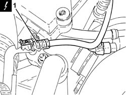
Applies to: engines: 2.2; all production periods
1. Disconnect the electrical connection (connector B) from the injection/ignition system control unit.
Description | Connector | |
|---|---|---|
1 | Engine management control unit |
2. Undo the bolt and disconnect the earth lead (connector C) from the injection/ignition system control unit.
Description | Connector | |
|---|---|---|
2 | Engine management control unit |
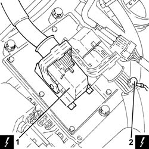
Applies to: engines: 2.2; all production periods
1. Disconnect the engine coupling.
Description | Connector | |
|---|---|---|
1 | Engine cables/engine services cable coupling |
2. Disconnect the electrical connection from the throttle casing with D.V.L.
Description | Connector | |
|---|---|---|
2 | Integrated throttle casing actuator |
3. Disconnect the electrical connection from the air pressure sensor.
Description | Connector | |
|---|---|---|
3 | Absolute pressure sensor |
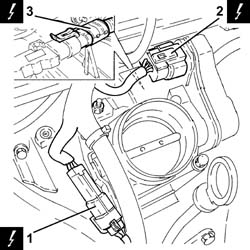
Applies to: engines: 2.2; all production periods
1. Disconnect the electrical connections from the injectors and release the system cable loom from the fastenings.
Description | Connector | |
|---|---|---|
1 | Injector |
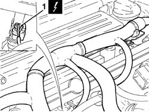
Applies to: engines: 2.2; all production periods
1. Disconnect the electrical connection from the ignition coil module.
Description | Connector | |
|---|---|---|
1 | Ignition coil | See A030 IGNITION COIL |
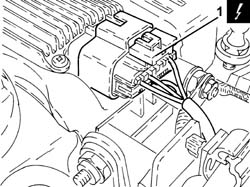
Applies to: engines: 2.2; all production periods
1. Disconnect the electrical connection for the radio interference condenser.
Description | Connector | |
|---|---|---|
1 | Interference filter |
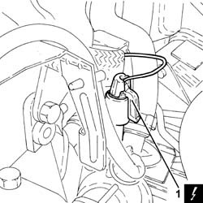
Applies to: engines: 2.2; all production periods
1. Disconnect the electrical connection from the engine coolant temperature sensor.
Description | Connector | |
|---|---|---|
1 | Engine coolant temperature sensor/sender unit |
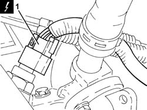
Applies to: engines: 2.2; all production periods
1. Disconnect the electrical connection from the rpm sensor.
Description | Connector | |
|---|---|---|
1 | Rpm sensor |
2. Disconnect the electrical connection from the engine oil pressure warning light switch.
Description | Connector | |
|---|---|---|
2 | Insufficient engine oil pressure sensor (switch) |
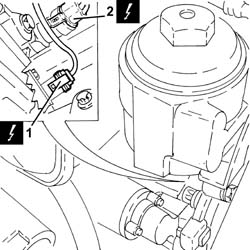
Applies to: engines: 2.2; all production periods
1. Disconnect the electrical connection from the knock sensor.
Description | Connector | |
|---|---|---|
1 | Detonation sensor |
2. Undo the bolts and disconnect the earth leads from the engine block.
Description | Connector | |
|---|---|---|
2 | Earth on engine |
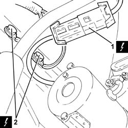
Applies to: engines: 2.2; all production periods
1. Remove the system cable loom after having released it from the remaining fastenings.
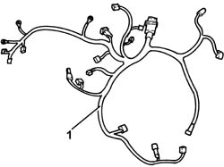
Applies to: engines: 2.2; all production periods
Refitting
Removing- Place the system cable loom in its housing and secure it.
- Connect the earth leads to the engine block and secure them using the bolts.
- Connect the electrical connection to the knock sensor.
- Connect the electrical connection to the engine oil pressure warning light switch.
- Connect the electrical connection to the rpm sensor.
- Connect the electrical connection to the engine coolant temperature sensor.
- Connect the electrical connection for the radio interference condenser.
- Connect the electrical connection to the ignition coil module.
- Connect the electrical connections to the injectors and secure the system cable loom using the fastenings.
- Connect the electrical connection to the air pressure sensor.
- Connect the electrical connection to the throttle casing with D.V.L.
- Connect the engine coupling.
- Connect the earth lead to the injection/ignition system control unit and secure it tightening the bolt to the recommended torque.
Component | Fastening | dia | Value (daNm) | Validity |
|---|---|---|---|---|
Injection/ignition system control unit | Bolt | M6 x 1 | (air chamber side) 0.9 | 2.2 |
- Connect the electrical connection to the injection/ignition system control unit.
- Connect the electrical connection to the air conditioning system multi-stage pressure switch.
- Connect the electrical connection to the inlet fuel vapour flow enablement solenoid valve.
- Connect the electrical connection to the air flow meter.
- Connect the electrical connection for the rear Lambda sensor to the catalytic converter.
- Connect the electrical connection for the front Lambda sensor to the catalytic converter.
- Place the air supply hose from the air flow meter to the throttle casing back in its housing and secure it using the bands.
- Connect the engine oil vapour recovery pipe to the cylinder head cover and secure it using the band.
- Place the sound insulation cover back in its housing and secure it to the engine using the three pins.
- Connect the negative battery terminal.
- Remove the vehicle from the lift.
Applies to: engines: 1.8; all production periods
Removing
RefittingOp. 7055B54 UNDER ENGINE PROTECTION/GUARD - R.R.
1. Disconnect the electrical connection for the coolant temperature sensor on the radiator.
Description | Connector | |
|---|---|---|
1 | Engine coolant temperature sensor/sender unit |
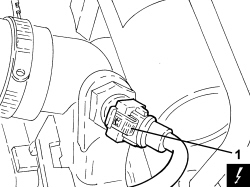
Applies to: engines: 1.8; all production periods
1. Disconnect the electrical connection for the air conditioning compressor.
Description | Connector | |
|---|---|---|
1 | Air conditioning compressor engagement electro-magnet | See L020 AIR CONDITIONING COMPRESSOR ENGAGEMENT ELECTRO-MAGNET |
2. Retract the protection and disconnect the electrical connection for the minimum engine oil pressure switch.
Description | Connector | |
|---|---|---|
2 | Insufficient engine oil pressure sensor |
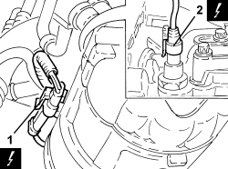
Applies to: engines: 1.8; all production periods
Op. 5520B10 STARTER MOTOR - R+R
1. Disconnect the electrical connection for the engine rpm sensor.
Description | Connector | |
|---|---|---|
1 | Rpm sensor |
2. Disconnect the electrical connection for the knock sensor.
Description | Connector | |
|---|---|---|
2 | Detonation sensor |
3. Disconnect the electrical connection for the variable geometry solenoid valve for the modular chamber.
Description | Connector | |
|---|---|---|
3 | Turbine variable geometry control solenoid |
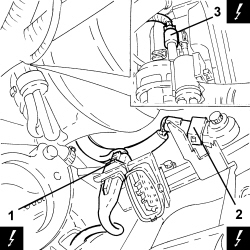
Applies to: engines: 1.8; all production periods
1. Disconnect the electrical connection for the engine oil level sensor.
Description | Connector | |
|---|---|---|
1 | Engine oil level sensor |
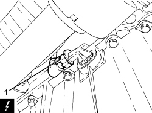
Applies to: engines: 1.8; all production periods
Op. 1032D26 TIMING SYSTEM FRONT PROTECTIVE COVER (UPPER PART) - R.R.
Op. 1008B10 POWER UNIT FRONT SUPPORT FLEXIBLE MOUNTING (TIMING SIDE) - REPLACE
Op. 1008A46 POWER UNIT RIGID SUPPORT - TIMING SIDE - R.R.
Op. 1032D28 FRONT (INTERMEDIATE) TIMING PROTECTIVE COVER - R.R.
1. Disconnect the electrical connection for the phase transformer solenoid, exhaust side.
Description | Connector | |
|---|---|---|
1 | Exhaust side phase transformer solenoid valve |
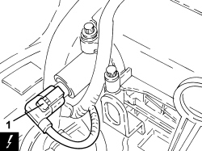
Applies to: engines: 1.8; all production periods
1. Release the wiring mounting bracket from the timing belt internal cover.
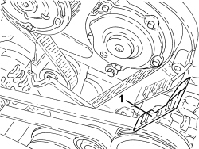
Applies to: engines: 1.8; all production periods
1. Disconnect the electrical connection for the phase transformer solenoid, inlet side.
Description | Connector | |
|---|---|---|
1 | Inlet side phase transformer solenoid valve |
2. Disconnect the electrical connection for the throttle casing.
Description | Connector | |
|---|---|---|
2 | Integrated throttle casing actuator |
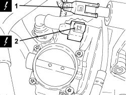
Applies to: engines: 1.8; all production periods
1. Disconnect the electrical connection for the fuel vapour solenoid valve.
Description | Connector | |
|---|---|---|
1 | Fuel vapour recovery solenoid valve |
2. Disconnect the electrical connection for the injection control unit.
Description | Connector | |
|---|---|---|
2 | Engine management control unit |
3. Undo the bolt fixing the earth lead to the injection control unit.
Description | Connector | |
|---|---|---|
3 | Earth on engine |
4. Remove the wiring duct from the retaining clips, inlet side and disconnect the electrical connections for the injectors.
Description | Connector | |
|---|---|---|
4 | Injector |
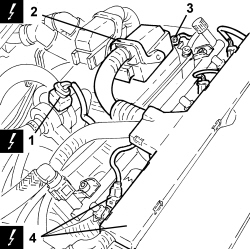
Applies to: engines: 1.8; all production periods
1. Disconnect the electrical connection for the exhaust side timing sensor.
Description | Connector | |
|---|---|---|
1 | Exhaust side timing sensor |
2. Disconnect the electrical connection for the front Lambda sensor.
Description | Connector | |
|---|---|---|
2 | Lambda sensor on catalyzer |
3. Disconnect the electrical connection for the thermostat temperature regulator.
Description | Connector | |
|---|---|---|
3 | Electronic thermostat |
4. Undo the bolt fixing the earth lead to the cylinder head.
Description | Connector | |
|---|---|---|
4 | Earth on engine |
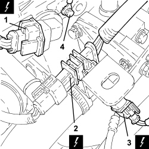
Applies to: engines: 1.8; all production periods
- Remove the wiring duct from the tappet cover, gearbox side.
1. Disconnect the electrical connection from the ignition coil module.
Description | Connector | |
|---|---|---|
1 | Ignition module |
2. Disconnect the electrical connection for the inlet side timing sensor.
Description | Connector | |
|---|---|---|
2 | Inlet side timing sensor |
3. Disconnect the electrical connection for the water temperature sensor on the thermostat.
Description | Connector | |
|---|---|---|
3 | Engine coolant temperature sensor/sender unit |
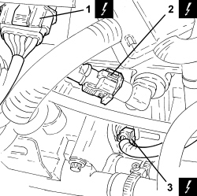
Applies to: engines: 1.8; all production periods
1. Disconnect the engine coupling electrical connection and remove it from the mounting bracket.
Description | Connector | |
|---|---|---|
1 | Engine cables/engine services cable coupling |
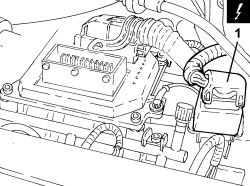
Applies to: engines: 1.8; all production periods
- Release the engine wiring from the intermediate fastenings and remove it.
Applies to: engines: 1.8; all production periods
Refitting
Removing- Refit the wiring in its seat and secure it.
- Connect the engine coupling electrical connection and place it on the mounting bracket.
- Connect the electrical connection for the water temperature sensor on the thermostat.
- Connect the electrical connection for the inlet side timing sensor.
- Connect the electrical connection of the ignition coil module.
- Place the wiring duct in its housing on the tappet cover, gearbox side.
- Tighten the bolt fixing the earth lead to the cylinder head.
- Connect the electrical connection for the thermostat temperature regulator.
- Connect the electrical connection for the front Lambda sensor.
- Connect the electrical connection for the exhaust side timing sensor.
- Connect the electrical connections for the injectors and place the inlet side wiring duct in its housing.
- Tighten the bolt fixing the earth lead to the injection control unit.
- Connect the electrical connection for the injection control unit.
- Connect the electrical connection for the fuel vapour solenoid valve.
- Connect the electrical connection for the throttle casing.
- Connect the electrical connection for the phase transformer solenoid, inlet side.
- Place the wiring mounting bracket in its housing on the timing belt inner cover.
- Connect the electrical connection for the phase transformer solenoid, exhaust side.
Op. 1032D28 FRONT (INTERMEDIATE) TIMING PROTECTIVE COVER - R.R.
Op. 1008A46 POWER UNIT RIGID SUPPORT - TIMING SIDE - R.R.
Op. 1008B10 POWER UNIT FRONT SUPPORT FLEXIBLE MOUNTING (TIMING SIDE) - REPLACE
Op. 1032D26 TIMING SYSTEM FRONT PROTECTIVE COVER (UPPER PART) - R.R.
- Connect the electrical connection for the engine oil level sensor.
- Connect the electrical connection for the variable geometry solenoid valve for the modular chamber.
- Connect the electrical connection for the detonation sensor.
- Connect the electrical connection for the engine rpm sensor.
Op. 5520B10 STARTER MOTOR - R+R
- Connect the electrical connection for the minimum engine oil pressure switch.
- Connect the electrical connection for the air conditioning compressor.
- Connect the electrical connection for the coolant temperature sensor on the radiator.
Topics linked from this page (31)
- 1008A46 POWER UNIT RIGID SUPPORT - TIMING SIDE - R.R.
- 1008B10 POWER UNIT FRONT SUPPORT FLEXIBLE MOUNTING (TIMING SIDE) - REPLACE
- 1032D26 TIMING SYSTEM FRONT PROTECTIVE COVER (UPPER PART) - R.R.
- 1032D28 FRONT (INTERMEDIATE) TIMING PROTECTIVE COVER - R.R.
- 5520B10 STARTER MOTOR - R+R
- 7055B54 UNDER ENGINE PROTECTION/GUARD - R.R.
- A001 BATTERY
- A031 IGNITION MODULE
- C040 EARTH ON ENGINE
- D029 ENGINE CABLES/ENGINE SERVICES CABLE COUPLING
- K017 LAMBDA SENSOR ON CATALYZER
- K018 LAMBDA SENSOR ON CATALYZER - 2
- K030 INSUFFICIENT ENGINE OIL PRESSURE SENSOR
- K032 ENGINE OIL LEVEL SENSOR
- K036 ENGINE COOLANT TEMPERATURE SENSOR/SENDER UNIT
- K041 AIR FLOW METER
- K046 RPM SENSOR
- K048 ABSOLUTE PRESSURE SENSOR
- K050 DETONATION SENSOR
- K106 INTAKE SIDE TIMING SENSOR
- K107 EXHAUST SIDE TIMING SENSOR
- L010 FUEL VAPOUR RECOVERY SOLENOID VALVE
- L020 AIR CONDITIONING COMPRESSOR ENGAGEMENT ELECTRO-MAGNET
- L036 TURBINE VARIABLE GEOMETRY CONTROL SOLENOID VALVE
- M010 ENGINE MANAGEMENT CONTROL UNIT
- N070 INJECTOR
- N075 INTEGRATED THROTTLE CASING ACTUATOR
- N086 ELECTRONIC THERMOSTAT
- N092 PHASE SHIFTER SOLENOID VALVE ON INTAKE SIDE
- N093 PHASE SHIFTER SOLENOID VALVE ON EXHAUST SIDE
- P087 NOISE FILTER